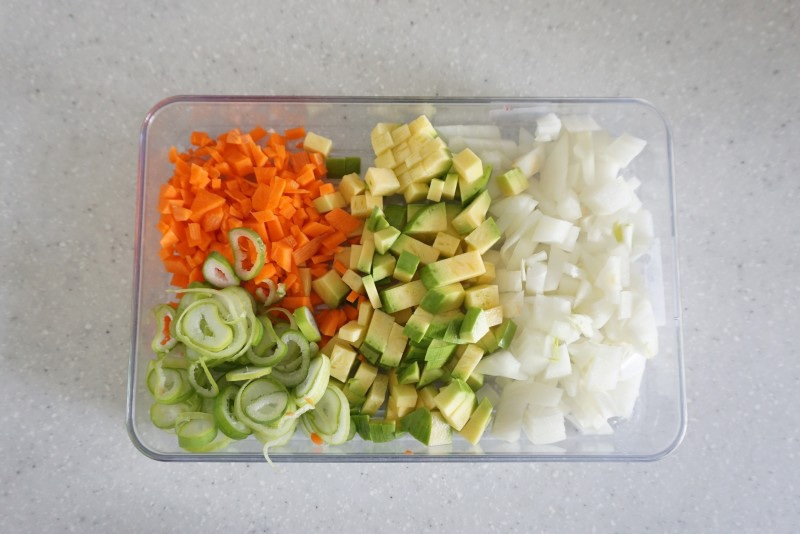
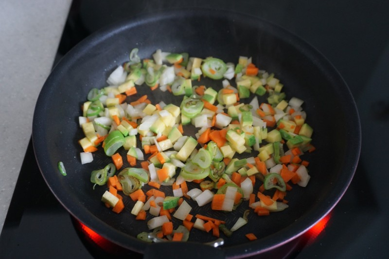
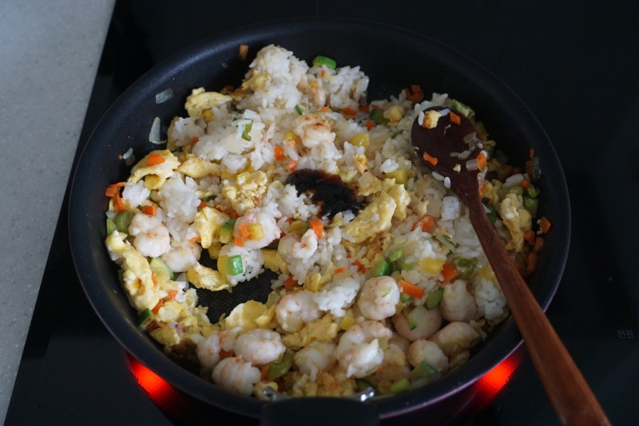

Chinese Food


재료 리스트
밥 1공기 |칵테일 새우 | 양파 1/3개 | 당근 1/3개| 애호박 1.3개 | 계란 1개 | 대파 조금 | 식용유 | 소금 | 굴소스
레시피
1. 대파는 송송 썰어주시고 양파,애호박,당근을 잘게 다져서 준비해주세요.

2. 준비된 팬에 기름을 넉넉히 두르고 달궈진 팬에 대파를 먼저 볶아 향을 내준 뒤
소금 한꼬집과 야채,새우살을 넣고 볶아주세요.
3. 야채와 새우가 익기 시작하면 한쪽으로 몰아준 뒤 풀어준 계란물을 넣어 스크램블을 만들어주세요.
4. 스크램블이 완성되면 밥과 볶아진 재료를 골고루 섞어준 뒤 굴소스를 기호에 맞게 넣어 조금 더 볶아주세요.

새우 볶음밥 완성 !!